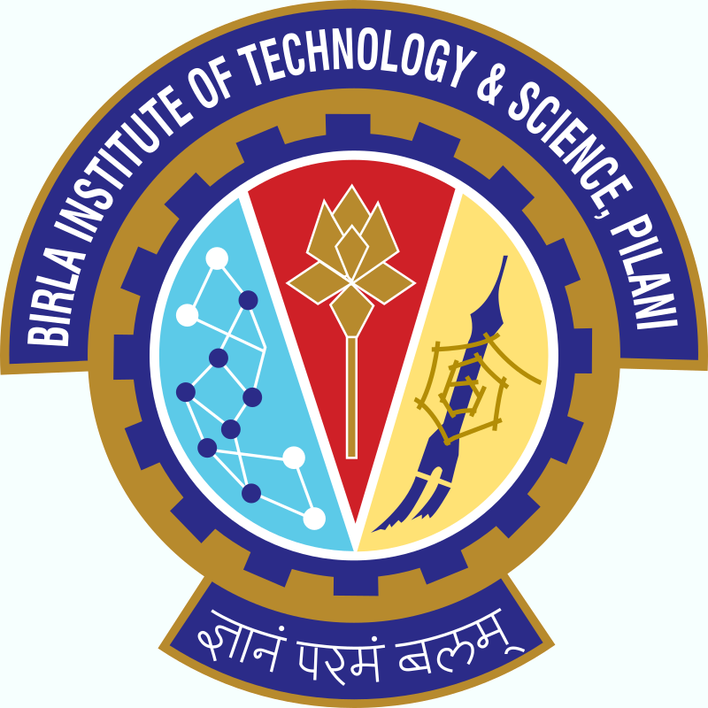
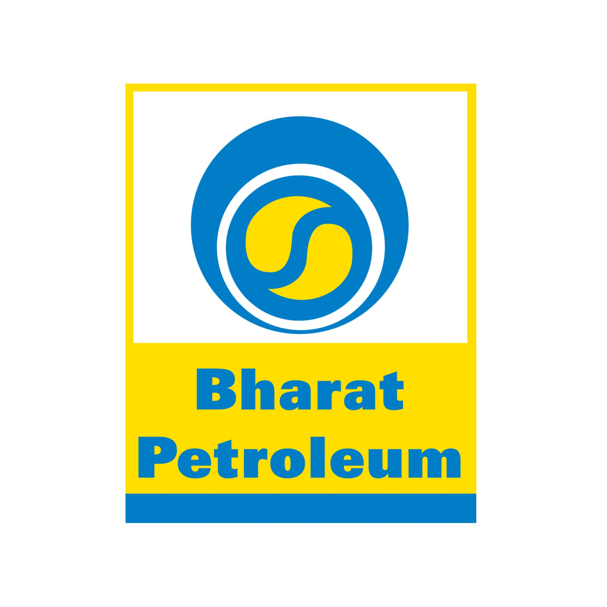
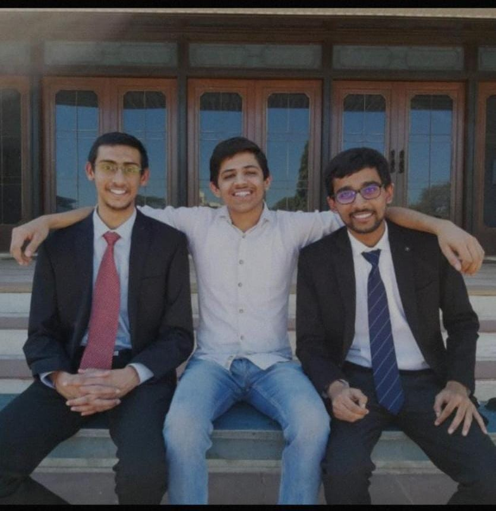
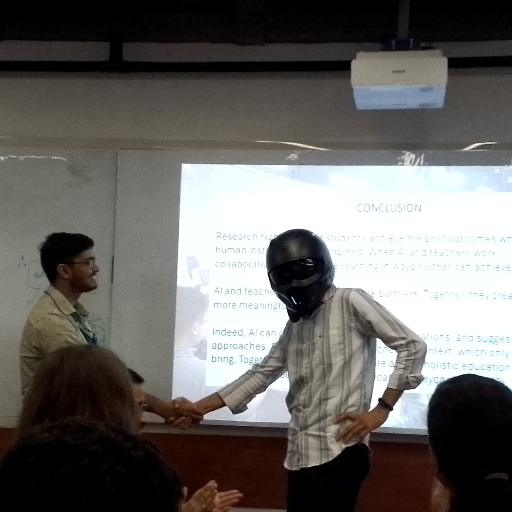
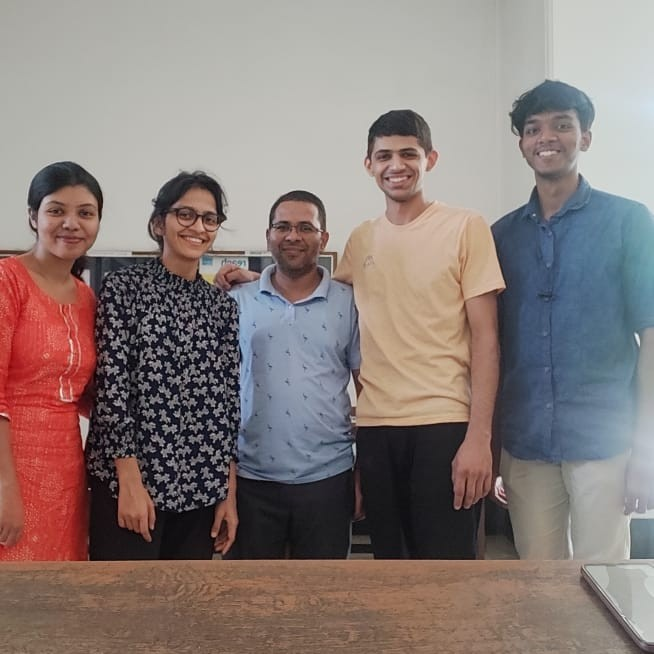
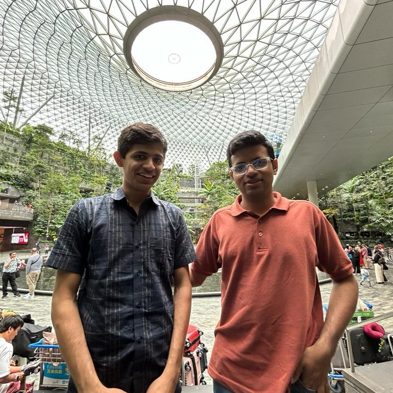
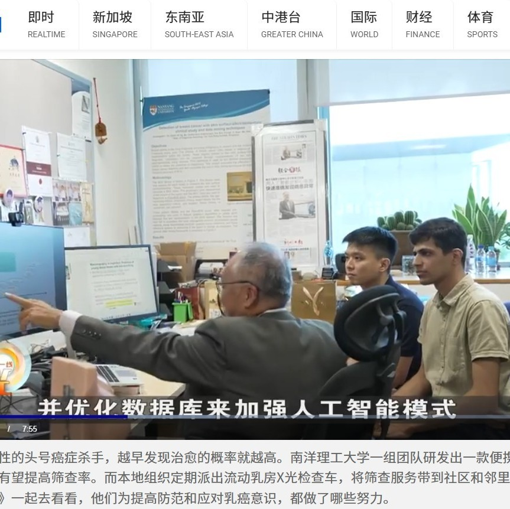
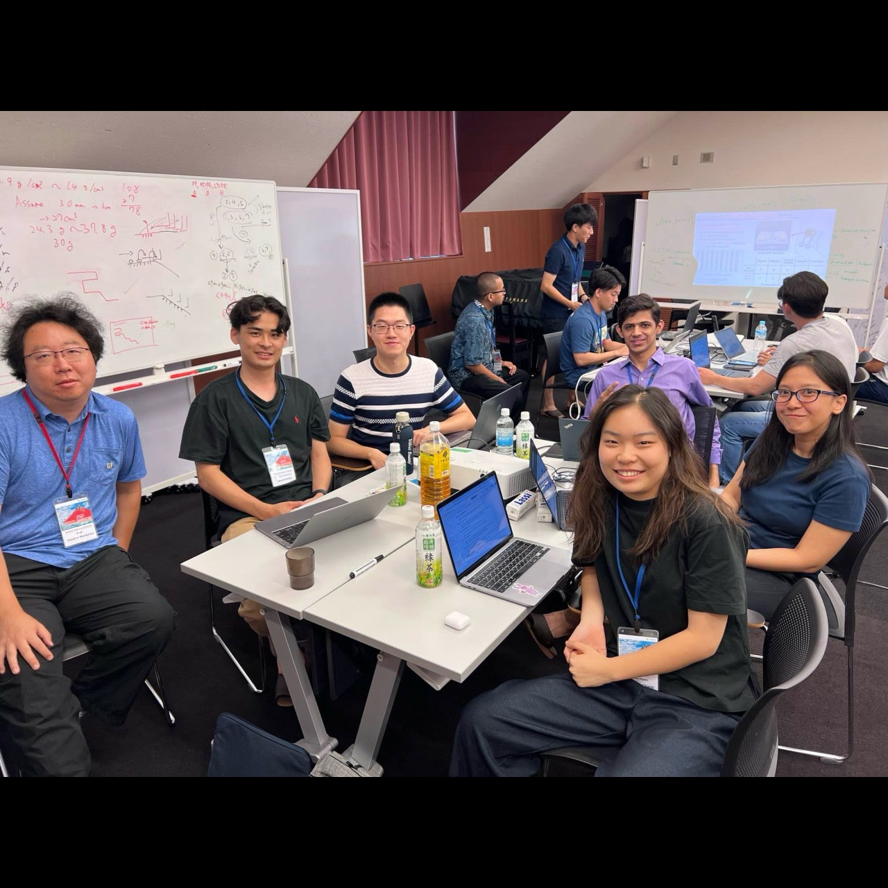

The Story So Far...
The plot is always changing, so keep checking back in for updates!
-

2018
Joined BITS Pilani
Started engineering at BITS Pilani. Thought I'd crack JEE and life would be sorted. Classic mistake number one.
-

2019
Grade Crash
Grades started falling like my motivation during semester exams. Had to actually study for once. What a concept!
-

Summer 2020
Intern at Bharat Petroleum Corporation Limited
First real job at BPCL, Mumbai. Learned some machine learning and how oil refineries work. Mostly just tried not to press any wrong buttons.
-

2020-2022
Chairperson, ASME BITS Pilani
Somehow became chairperson of 35-40 people. Organized water rocket competitions and made ASME's first online global event happen. Good times during lockdown.
-

Fall 2021
Teaching Assistant
Teaching assistant for Mechanisms and Machines at BITS. This photo's from NTU where we did a skit instead of slides. I'm the one in the helmet, Mallar played the professor.
-
May-Jul 2022
Intern at JSW Energy Ltd
Summer internship at JSW Energy in Mumbai and Barmer. Worked on thermal power plants and boiler problems. Made some fancy presentations about saving money.
-

Nov-Dec 2023
Project Associate at IISc
Short stint at IISc Bangalore as project associate. Realized pretty quickly it wasn't for me. Sometimes you just gotta cut your losses and move on.
-

Jan 2024
First Time in Singapore
First time in Singapore with Abhishek Tyagi (he was at NVIDIA, now doing PhD at NUS). Two guys from India figuring out a new country. Airport was nice though.
-
2024-Present
PhD Student at NTU Singapore
Started PhD in Mechanical and Aerospace Engineering at NTU. Also working as peer tutor for Fluid Dynamics and Heat Transfer. Basically helping other students not fail.
-

Dec 2024
Chinese Media Coverage
Our research on thermal imaging for breast cancer detection got featured in Chinese media and TV. Pretty cool seeing your work outside academic papers. Link is here.
-

July 2025
Research Camp, Tokyo/Yamanaka
Participated in a research camp near Mount Fuji, University of Tokyo, Japan, working on a Smart 3-in-1 Plastic Separation Device for future recycling factories because someone’s gotta save the planet, right? Here are details and pictures.
-
To Be
Continued
...